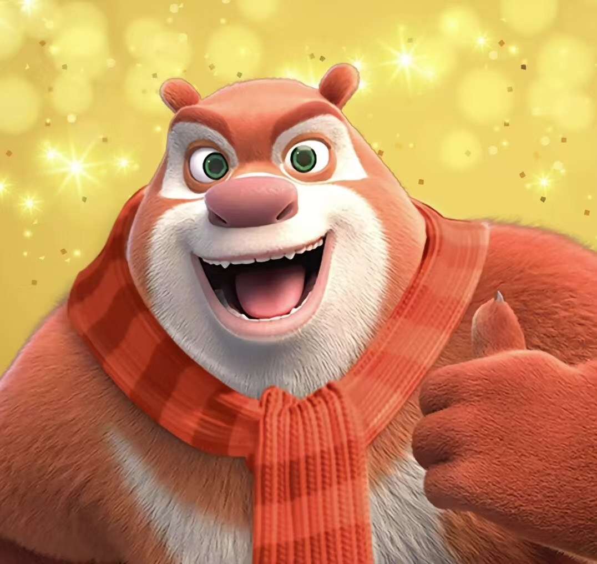

熊大是一个出现在中国国产动画片《熊出没》系列及其衍生作品中的主要角色。以下是关于熊大的详细介绍：
熊大拥有棕红色的皮毛，红色的大鼻子，以及一个形似香肠的嘴巴。他的身材魁梧且较为肥胖，但在某些情况下，如使出全力时，他的身材会显得健硕硬朗。在小时候，熊大的皮毛颜色包括棕色和白色，鼻子和嘴巴也相对较小，整体形象更加可爱和肉嘟嘟2。
熊大是一个聪明且具有领导能力的角色，经常依靠他的智慧来战胜对手，尤其是与伐木工光头强的斗争中。他对弟弟熊二非常关心，尽管有时会训斥或教训熊二，但这种行为背后是对弟弟深厚的感情。例如，在《冬日乐翻天》中，熊大亲手为熊二织被子，表现出他对熊二的关爱2。
熊大在《熊出没》系列动画中经历了许多冒险和挑战。他和熊二以及其他小动物们一起，为了保护自己的森林家园，与光头强展开了多次斗争。这些斗争不仅展示了熊大的智慧和勇气，也体现了他作为领导者的能力2。
熊大是一个深受观众喜爱的角色，以其聪明、勇敢和对弟弟的深厚感情而著称。无论是在面对强大的敌人还是在保护家园的过程中，熊大总是展现出坚定的决心和无畏的精神。通过与熊二和其他朋友们的合作，熊大不仅保护了自己的家园，也赢得了观众的心。